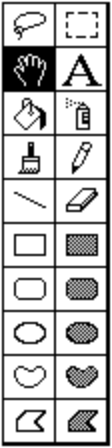

My work is driven by deep appreciation for both digital materials and human
complexity.
I lead with curiosity about the world, and strive for clarity and
excellence.
First vibe-coding product on the market, empowering millions of non-coders to build skills, go viral, and form creative communities. Designed APIs for humans and AIs, productionizing AI-SWE research for cost, speed, and steerability. Built & sold RL environments as a data vendor.
Product design & social algorithm for game development app & social media network. (Scratch x TikTok)
Worked with clients like New Computer, Sprout.place, ClassDojo, Artbreeder to build
new tools.
My product development ethos is to use technical
expertise and domain knowledge to optimize for learning by skipping forward to the hardest and most unknown parts of a product.
Taught "Hand Held", a popular 14 week project based curriculum on creative tool design and interface implementation. Alumni have gone on to work at Anthropic, Meta, Bytedance, startups.
Researching and developing composable system UI for Fuchsia, a
capability-based operating system.
I collaborated up and down the stack, from kernel engineers to user
researchers, to bring up a new OS.
Open-source tool for tracking and managing live software errors in production systems.
TypeScript SDK / agent harness for playing runescape, plus a popular benchmark suite evaluating frontier AI coding agents on gameplay tasks. Active community of players building agent swarms.
Web-based particle simulation drawing game and social network, built with Rust, Web Assembly, WebGL, and Postgres. Robust artistic community and player base, 30M+ page views, 2M+ uploaded artworks.
Super-smooth fast ASMR image similarity explorer for Are.na images. Powered by SigLIP and pgvector.
Twitter bot which scrapes the New York Times and posts first-ever occurrences of words, plus their context for an audience of 200k+ followers. Covered by the NYT, Newsweek and IEEE Spectrum.